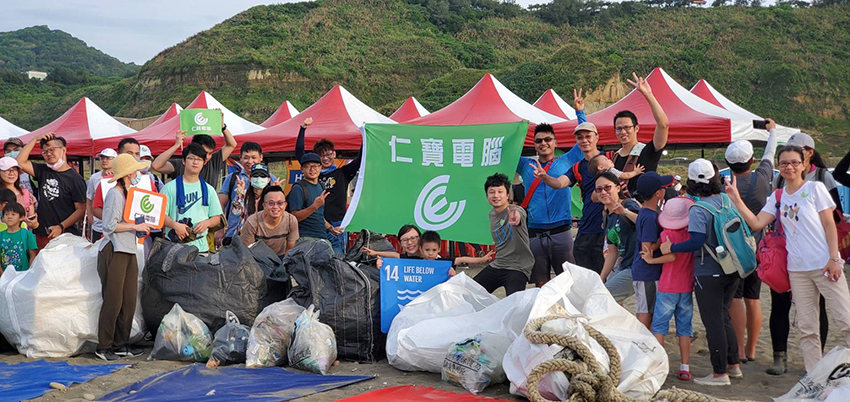
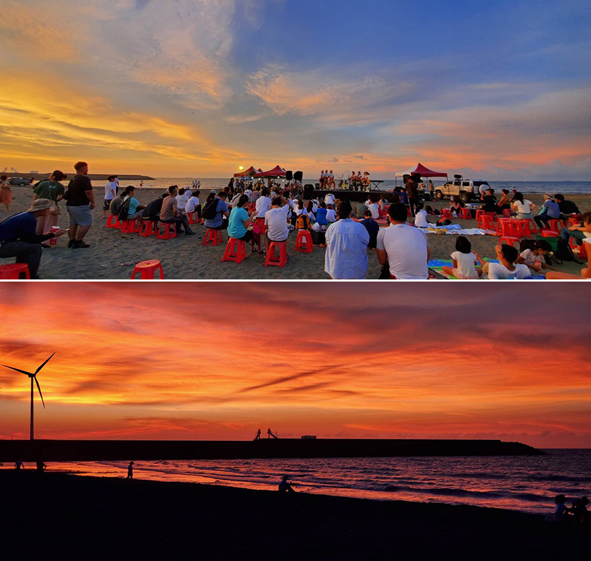

|  |
在颱風和開學日的雙重影響之下，原本報名淨灘和音樂會的同仁，有不少打了退堂鼓。但是也因有颱風接近的關係，當55位同仁們抵達林口嘉寶海灘的會場，沒有超大的太陽、也沒有颱風間歇式的大風大雨。多雲的天氣、海風微微的吹著，風力發電的風車、佇立轉動著，身著橘色制服的海巡署救難隊員、安靜停靠的救護車，在海邊搭建的舞台上，認真排演試音、為海洋音樂日做準備的仁寶吉他社同仁們， 大家專注地做自己應該做的事情。2020仁寶電腦同仁參與「企業聯合淨灘暨海洋音樂日」初體驗，就此展開。
林口嘉寶海灘位於新北市嘉寶溪出海口，2018年環保團體調查評估，延自其北側寶斗/南灣出海口的沙灘，為全台前12大最骯髒海灘之一！8月29日在光寶科技的邀請之下，仁寶電腦、研華科技、海神全球四家企業參與聯合淨灘行動。其中仁寶、光寶、研華三家企業由同仁自組的音樂社團，也擔任傍晚的演出。同時光寶科技也邀請了Fail原聲舞動、拉卓越、Mifaca'洗衣板、Ｅ火舞團等原民樂舞團，一起用實際的行動力，用熱愛的音樂，表達對海洋及這片土地的情感，期望能發揮個人對永續傳承的力量。
仁寶負責的淨灘區域多是微小的塑膠碎片丶人類隨意丟棄的菸蒂、飲料空瓶、吸管。同仁們不管是和朋友一起參加、或是全家來參加、帶姪子來參與，大朋友發揮在工作上認真合作的精神，小朋友也學習拾除那些不該出現在海灘上的垃圾，行走間避開自然生長的綠色植物、偶爾發現海洋生物的驚呼和開心笑聲，三五成群的埋頭撿拾。本次負責區域最大的垃圾障礙是糾結成長方體纏繞的魚網。只見仁寶勇士們一擁而上，輪流切割，換手丶換手丶再換手，先分解再拖至回收處集結。
淨灘垃圾中雜塑膠交給海神全球回收，可以進行循環經濟再製使用。許多參與净灘的同仁表示，塑膠碎片實在很難撿，本為小朋友們準備的撈網成為搶手貨。
淨灘結束後，迎接同仁們的是瑰麗的夕陽，仁寳吉他社表演同仁在暈染的霞光背景及海浪拍打聲中，用「太陽」及「 海闊天空」的歌聲，陪伴三三二二在沙灘閒聊聽歌的同仁和家人們。
|  |
若是我們在生活上都能減少製造無法自然消滅的垃圾，減少不必要的浪費。那麼，未來若干年後，人們是否可以把「淨灘」當成一個古老的名詞，自在的享受純淨的海洋美景。
今年仁寶電腦在天下CSR企業公民獎大型企業五十強中排名第44名。 感謝大家的努力，持續響應關懷弱勢教育、環境生態教育，參與社會服務。 仁寶電腦重視企業社會責任， 期望在同仁們的共同努力下，持續推動並實踐環境生態教育，建立為人們更美好的生活而努力的信念。
這次沒能參加的同仁們別感覺遺憾，還有更多有意義的行動等著您一起參與。